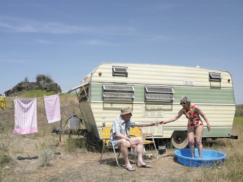
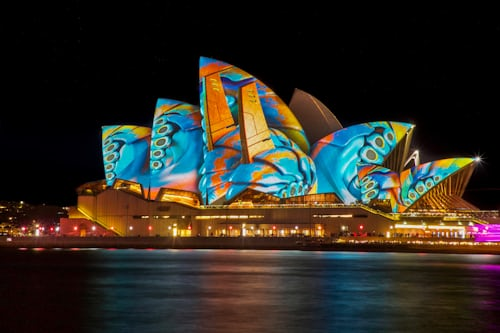
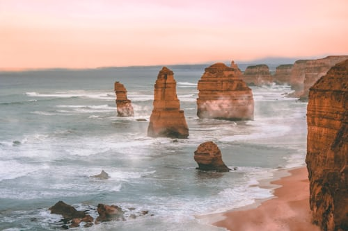

Destinasi Liburan
Di Benua Australia

27 Januari 2024
Dua orang menikmati suasana liburan yang damai, satu bersantai di kursi sementara yang lain berendam di kolam kecil. Pakaian bersih yang dijemur menambah kesan sederhana namun nyaman di tengah keindahan alam Australia

14 Maret 2024
Sydney Opera House adalah ikon arsitektur di Sydney, Australia, dengan desain unik menyerupai layar kapal. Dibuka pada tahun 1973, gedung ini menjadi pusat seni dan budaya, serta tujuan wisata utama.
